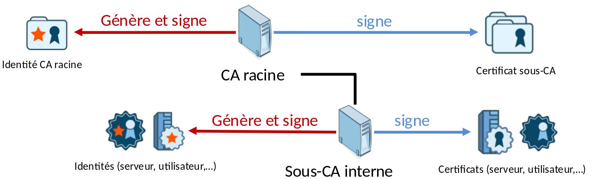
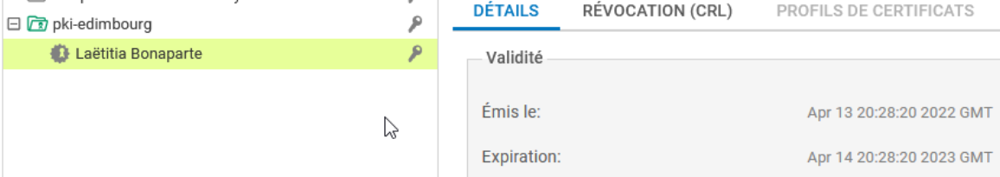

Fiche 11 -- Infrastructures à clés pubiques (PKI)
Gestion des certificats
Les pare-feu Stormshield intègrent les fonctions permettant la gestion des certificats.
Écran de gestion
- Se rendre au menu CONFIGURATION / OBJETS / Certificats et PKI

+Ajouter lance des assistants de configuration permettant d'ajouter des éléments dans les objets :
- Autorité racine : permet de créer une autorité de certification racine gérée par le firewall. Cette autorité peut être une sous-autorité d'une PKI externe.
- Sous-autorité :permet de créer une autorité de certification dépendant d'une autre CA. L'autorité parente doit être gérée par le boitier.
- Identité utilisateur : permet de créer une identité utilisateur dépendant d'une autorité de certification gérée par le boitier.
- Identité serveur : permet de créer une identité serveur dépendant d'une autorité de certification gérée par le boitier.
- Smartcard : permet de créer une identité Smartcard dépendant d'une autorité de certification gérée par le boitier.
- Importer un fichier : le fichier importé peut être une identité, un certificat, une CRL.
CA interne et externe
CA interne
Cette fonctionnalité de gestion d'une infrastructure à clés publiques permet de répondre à un grand nombre de cas d'usage :
-
Le pare-feu agit en tant qu'autorité de certification racine (root CA) : le boîtier SNS permet de définir les chaînes de confiance nécessaires à une authentification par certificat. Des autorités par défaut sont disponibles pour signer les certificats utilisés par le proxy SSL ou livrer les certificats nécessaires au fonctionnement du VPN SSL. Son certificat d'autorité est auto-signé.
Les fonctions proposées par le boîtier SNS permettent de répondre pleinement au rôle d'autorité de certification (création de certificat de différentes natures, signature de CSR, révocation de certificat et gestion de CRL).
-
Le pare-feu agit en tant que sous-autorité de certification : il est possible de définir un boîtier SNS comme étant une sous-autorité de certification d'une CA parente (gérée obligatoirement sur le même boîtier). Le certificat de la sous-autorité est signé par l'autorité parente (pas nécessairement une autorité racine), laquelle est une autorité interne ou externe. Cela permet d'organiser plus finement la répartition et la distribution des identités, par usages ou par entités d'une même entreprise.

CA externe
Dans le cadre d'usage d'une CA externe, les fonctionnalités proposées permettent essentiellement d'importer des certificats et de définir les relations de confiance pour divers usages :
- Import de certificats d'autorité de certification.
- Import de certificats d'équipements.
- Import de certificats et de clés privés d'équipements (fichiers « .p12 » protégés ou pas par mot de passe).
Le firewall agit en tant que PKI en permettant l'import de certificats, voire d'identités (protégées par des fichiers de type PKCS#12), émis par une CA externe
Les certificats importés sont accessibles aux modules requérant une authentification par certificats (interface d'administration, VPN SSL, VPN Ipsec, etc.)
Création d'une autorité de certification
- Se rendre au menu CONFIGURATION / OBJETS / Certificats et PKI
- Cliquer sur Ajouter puis sélectionner Autorité racine.
- Renseigner un CN (obligatoire) : il s\'agit d\'un nom permettant d'identifier votre autorité racine, dans la limite de 64 caractères. Ce nom peut faire référence à une organisation, un utilisateur, un serveur, une machine, etc.
- Renseigner un Identifiant (facultatif) : vous pouvez ici indiquer un raccourci de votre CN, utile pour vos lignes de commande.
-
renseigner les attributs de l\'autorité. Ces informations seront présentes dans le certificat de l\'autorité ainsi que dans les certificats qu\'elle émettra :
- Organisation (O) : nom de votre société.
- Unité d'organisation (OU) : \"branche\" de votre société.
- Lieu (L) : ville dans laquelle est située votre société
- État ou province (ST) : département géographique de votre société.
- Pays (C) : pays dans laquelle est située votre société
-
Cliquer sur Suivant.
- Saisir le mot de passe destiné à protéger l\'autorité racine et confirmez-le. Une jauge indique le degré de robustesse de votre mot de passe. Il est recommandé de combiner les lettres minuscules, majuscules, les chiffres et les caractères spéciaux.
- Renseigner votre E-mail (facultatif) afin de recevoir un message vous confirmant la création de votre autorité.
-
Modifier éventuellement des éléments du certificat :
-
la valeur de la durée de validité (jours) conseillée des certificats est de 365 jours (proposée par défaut). Ce champ correspond au nombre de jours durant lesquels votre certificat d\'autorité et par conséquent votre PKI seront valides. Cette date influe sur tous les aspects de votre PKI. En effet, une fois ce certificat expiré, tous les certificats utilisateurs le seront également. Cette valeur qui ne doit pas excéder 3650 jours ne sera pas modifiable par la suite.
- Vous pouvez aussi modifier la Taille de clé (en bits) du certificat. Bien que les clés de grande taille soient plus efficaces, il est déconseillé d'utiliser celles-ci avec les équipements d'entrée de gamme, pour des raisons de temps de génération.
- Cliquez sur Suivant puis encore sur Suivant.
Un résumé des informations saisies vous est présenté :
- Cliquer sur Terminer.
Résultat
L'autorité est automatiquement ajoutée à l'arborescence des autorités, identités et certificats définis sur le firewall.
Un clic sur l'autorité affiche ses informations détaillées dans la partie droite de l'écran.
-
Définir éventuellement par défaut l'autorité de certification
Création d'une identité serveur
Voir « fiche 12 -- Le VPN »
Différence entre les certificats PEM et DER
Certificat PEM (Privacy Enhanced Mail)
- Encodage : Le format PEM utilise un encodage Base64.
- Structure : Le contenu est encadré par des balises :
- Utilisation : Principalement utilisé pour les certificats SSL/TLS sur les serveurs web, ainsi que pour stocker des clés privées et des certificats intermédiaires.
- Extension de fichier : Les fichiers PEM ont souvent l'une des extensions suivantes : .pem, .crt, .cer, ou .key.
- Lisibilité : Il est lisible en texte brut et peut être ouvert avec n'importe quel éditeur de texte.
Certificat DER (Distinguished Encoding Rules)
- Encodage : Le format DER est binaire (non encodé en Base64).
- Structure : Pas de balises, le fichier est stocké dans un format binaire pur.
- Utilisation : Couramment utilisé dans des environnements où l'encodage Base64 n'est pas nécessaire, comme les applications Java.
- Extension de fichier : Les fichiers DER ont généralement l'extension .der ou .cer.
- Lisibilité : Non lisible en texte brut. Il ne peut pas être ouvert directement avec un éditeur de texte classique.
Création et gestion d'une identité utilisateur
Première méthode à partir d'un utilisateur créé dans l'annuaire LDAP interne du firewall
il est possible de générer une identité utilisateur directement depuis l'annuaire LDAP interne du firewall. Dans ce cas, le choix de l'autorité signataire se porte automatiquement sur la CA désignée par défaut.
- Se rendre au menu CONFIGURATION / UTILISATEURS / Utilisateurs
- Sélectionner l'utilisateur puis cliquer sur CERTIFICAT puis Créer l'identité
- Cliquer sur « Créer l'identité » ⇒ Le certificat de l'utilisateur s'affiche
Il est également visible via le menu OBJETS / CERTIFICATS et PKI

Deuxième méthode
- Se rendre au menu CONFIGURATION / OBJETS / Certificats et PKI
- Cliquer sur +Ajouter puis Identité Utilisateur.
- Renseigner :
- un CN (obligatoire) : nom permettant d'identifier l\'utilisateur dans la limite de 64 caractères.
- un Identifiant (facultatif) : vous pouvez ici indiquer un raccourci de votre CN, utile pour vos lignes de commande (exemple : si le CN est un couple Prénom+Nom, l\'identifiant peut correspondre aux initiales du CN).
- l'adresse e-mail (obligatoire) de l\'utilisateur pour lequel vous créez une identité.
- Cliquer sur Suivant.
- Sélectionner l\'Autorité parente destinée à signer le certificat de l\'identité.
- Renseigner le Mot de passe de l\'autorité parente.
Info
Les attributs de l\'autorité sont automatiquement ajoutés. Ils seront présents dans le certificat utilisateur.
- Cliquer sur Suivant.
Info
Lorsque le firewall dispose d'un TPM et que celui-ci a été initialisé, cocher la case Protéger cette identité à l'aide du TPM pour enregistrer cette identité sur le TPM.
TPM
Le TPM (Trusted Platform Module) est un composant matériel de sécurité qui permet de stocker et protéger les clés cryptographiques ainsi que d'autres données sensibles de manière sécurisée. Le TPM est conçu pour renforcer la sécurité des systèmes en fournissant des fonctionnalités comme l'authentification sécurisée et le chiffrement des données. Il est obligatoire pour Windows 11 désormais en version 2.0 (Puce TPM)
- Modifier éventuellement des éléments du certificat : la valeur de la durée de validité (jours) conseillée des certificats est de 365 jours (proposée par défaut). Vous pouvez aussi modifier la Taille de clé (en bits) du certificat. Bien que les clés de grande taille soient plus efficaces, il est déconseillé d'utiliser celles-ci avec les équipements d'entrée de gamme, pour des raisons de temps de génération.
Attention
Si l\'autorité utilisée pour générer le certificat est l'autorité par défaut du firewall ET si un utilisateur déclaré dans l'annuaire LDAP référence la même adresse e-mail que celle précisée à l'étape 3, vous pouvez associer automatiquement cette identité à l'utilisateur correspondant :
- Cocher la case Publier cette identité dans l'annuaire LDAP,
- Saisissez deux fois un mot de passe destiné à protéger le conteneur PKCS#12 de l'identité.
- Cliquer sur Suivant ⇒ Un résumé des informations saisies vous est présenté.
- Cliquer sur Terminer.
Info
L'identité est automatiquement ajoutée à l'arborescence des autorités, identités et certificats définis sur le firewall, sous son autorité parente.
Gestion des identités et certificats
Menu Télécharger
Certificat : le format d'export contient des données en base64 (.pem) ou des données binaires (.der). Le fichier exporté contient le certificat du porteur mais également les certificats des autorités présentes dans la chaîne de confiance de ce certificat.
Identité : l'identité, puisqu'elle contient une clé privée, est sensible et son export doit être protégé par un mot de passe, lequel permet de chiffrer la clé privée qu'il contient. L'identité est pour rappel constituée de la clé privée du porteur, de son certificat (qui contient sa clé publique), et des certificats de la chaîne de confiance. Le fichier d'export est un container .pem ou un container PKCS#12 (ou .p12).
Document 1 : Rappels et vocabulaire
Infrastructure à clés publiques ou PKI (Public Key Infrastructure)
Infrastructure qui héberge les informations publiques (annuaire, CRL) et qui permet d'accéder aux certificats de l'organisation, d'effectuer un renouvellement de certificat, ou de le révoquer.
Un certificat peut contenir du texte (extensions .pem, .crt) ou des données binaires directement (extensions .cer, .der).
La validité du certificat est remise en cause :
- à l'expiration de ce dernier (limitation dans le temps) ;
- à l'expiration de la CA ;
- en cas de perte ou de vol de la clé privée du propriétaire ;
- en cas de départ du propriétaire de la société.
Liste des certificats révoqués
La CRL est un fichier signé par la CA, qui liste les numéros de série des certificats révoqués avant leur expiration. Cette liste doit être accessible publiquement pour permettre aux utilisateurs de s'assurer que les identités qui leur sont présentées sont encore valides.

Stockage des identités numériques par la CA
Lorsque la CA génère les bi-clés, il est simple de contrôler la robustesse des clés et de les sauvegarder, mais cela nécessite la mise en place d'une procédure sécurisée pour délivrer son identité à un utilisateur final. Il existe pour cela un container protégé standardisé nommé PKCS#12 qui contient traditionnellement : [clé privée du porteur + certificat du porteur (contenant sa clé publique) + certificat de la CA signataire].
Document 2 : Fonctionnalités de la PKI de Stormshield
Authentification d'utilisateurs
1. L'utilisateur mobile, ou l'administrateur de l'interface web, souhaitant s'authentifier auprès du firewall présente son certificat utilisateur, soit par son navigateur web, soit par son client VPN IPsec,
2. Le firewall vérifie la validité du certificat et contrôle l'identité de l'utilisateur sur le serveur LDAP,
3. Les politiques d'accès attachées à cet utilisateur peuvent alors lui être appliquées, pour permettre l'accès aux ressources réseau internes.
Authentification de serveurs (et / ou de clients)
-
Le serveur, lors de l'initialisation d'une session, présente son certificat serveur au client, lequel vérifie sa validité,
-
Éventuellement, le client présente son certificat client au serveur, lequel vérifie sa validité. Lorsque cette étape est présente, il s'agit d'une session avec authentification mutuelle (c'est le cas par exemple d'une session TCP/TLS entre le firewall client et le serveur Syslog Stormshield Visibility Center),
-
Après l'authentification, le client et le serveur négocient une clé de session.
Authentification de passerelles IPSec
-
Lors de la phase d'établissement du tunnel, le firewall qui initie le tunnel (Initiator) présente son certificat à la passerelle distante, laquelle vérifie sa validité,
-
Le firewall qui répond (Responder) présente son certificat à la passerelle distante, laquelle vérifie sa validité,
-
Outre les vérifications effectuées sur la validité des certificats présentés (intégrité, signature numérique, période de validité, etc.), le certificat de l'autorité de certification ayant signé le certificat de la passerelle distante doit appartenir au groupe de confiance de CA, 'est-à-dire aux autorités de certification acceptées dans la politique VPN Ipsec,
-
La vérification de l'identité de la passerelle distante permet de garantir que le tunnel est monté avec la passerelle identifiée par le certificat, ce point optionnel ne peut être défini qu'en CLI.